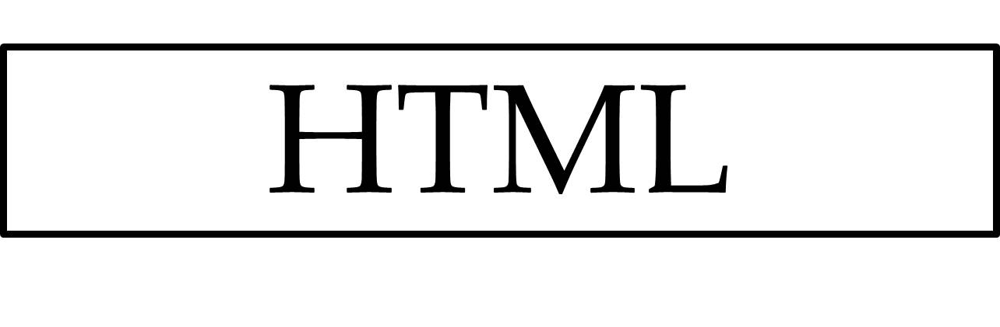

HTML이란 무엇인가?
이미지를 클릭하면 페이지가 연결됩니다.
Hypertext Markup Language (HTML) is the standard markup language for creating web pages and web applications.
Web browsers receive HTML documents from a web server or from local storage and render them into multimedia web pages.
HTML describes the structure of a web page semantically and originally included cues for the appearance of the document.

HTML elements are the building blocks of HTML pages. With HTML constructs, images and other objects, such as interactive forms, may be embedded into the rendered page.
It provides a means to create structured documents by denoting structural semantics for text such as headings, paragraphs, lists, links, quotes and other items.HTML elements are delineated by tags, written using angle brackets.